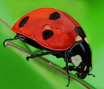
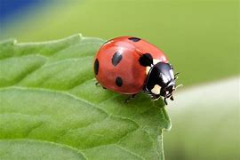

Ladybugs (The Insect)
We all know ladybugs are good luck, especially, to quote Alya Cesaire, "in the loove department". But is that really
it?
Of course, there has to be more! So now I've done some research, and let's hope we know a little more about the
ladybugs that inspired out favorite
superheroine!
The ladybug symbolizes good luck. Ladybugs consume aphids, a common plant pest,
and are considered to be beneficial to farmers and gardeners. A single ladybug consumes up to 5,000 aphids in a
lifetime.
Even though they are native to North America, the belief that bad luck comes to those who harm ladybugs is common
in many cultures
around the world. Some European Christians believe a ladybug's spots symbolize the Seven Sorrows of Mary, and the
name comes from "Beetles of
Our Lady," a term coined when ladybugs saved two farms from ruin after two farmers prayed to Virgin Mary for aid.The
person may succeed in love,
have good weather, experience financial success or receive another wish if you see one. Other cultures say having
a ladybug land on you brings good luck,
or whatever a ladybug lands on will be replaced with a better version. Feng shui, the practice of arranging spaces
for a maximum flow of energy, often uses
the ladybug symbol.


Whoops, wrong one! :P